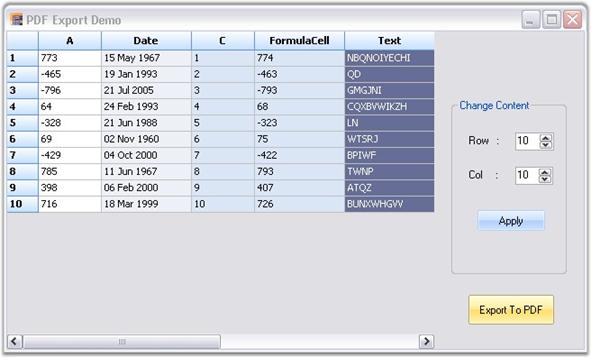

Our Essential Grid control supports conversion of grid content to a PDF file. Data in Grid control can be converted to a PDF document for offline verification and/or computation. This can be achieved by making use of the GridPDFConverter class. The PDF libraries are used to support the conversion of grid content to a PDF page.
For making the control functional, the following dll files should be added along with the default dll files in the reference folder:
· Syncfusion.Pdf.Base
· Syncfusion.GridHelperClasses.Windows.
The ExportToPdf method is used to export the grid content to a PDF file. Following code example illustrates how to convert the content in grid to PDF.
1. Using C#
|
[C#]
GridPDFConverter pdfConvertor = new GridPDFConverter(); pdfConvertor.ExportToPdf("Sample1.pdf", this.gridControl1); |
2. Using VB.NET
|
[VB.NET]
Dim pdfConvertor As GridPDFConverter = New GridPDFConverter() pdfConvertor.ExportToPdf("Sample1.pdf", Me.gridControl1) |

Figure 142: Grid to be Exported
A sample demonstrating this feature is available under the following sample installation path.
<Install Location>\Syncfusion\EssentialStudio\[Version Number]\Windows\Grid.Windows\Samples\2.0\Export\PDF Converter Demo
Support to Access or Modify Document Attributes of Exported PDF
This feature allows you to access and modify PDF document attributes while exporting, or after exporting, a grid to PDF. When you want to check the page count of the exporting document, you can use this feature.
Events
Table 5: Export Event table
|
Event |
Description |
Arguments |
Type |
Reference links |
|
Exporting |
This will be triggered before exporting grid to PDF. |
(object sender, Eventargs e) |
event |
N/A |
|
Exported |
This will be triggered after exporting grid to PDF. |
(object sender, Eventargs e) |
event |
N/A |
Sample Link
A demo of this feature is available in the following location:
\..\..\AppData\Local\Syncfusion\EssentialStudio\{Version}\Windows\Grid.Windows\Samples\2.0\Export\PDF Export Demo
Hooking the events in an application
You can hook the events using the ExportToPdf() method of PDFconverter. The following code illustrates this:
|
[C#]
GridPDFConverter pdfConvertor = new GridPDFConverter(); pdfConvertor.Exporting += new GridPDFConverter.PDFExportingEventHandler(pdfConvertor_Exporting); pdfConvertor.Exported += new GridPDFConverter.PDFExportedEventHandler(pdfConvertor_Exported);
|
|
[VB]
Dim pdfConvertor As GridPDFConverter = New GridPDFConverter() AddHandler pdfConvertor.Exporting, AddressOf pdfConvertor_Exporting AddHandler pdfConvertor.Exported, AddressOf pdfConvertor_Exported
|